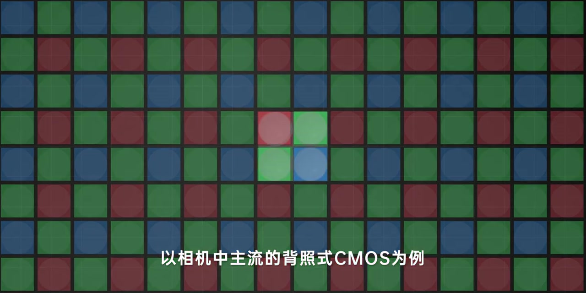
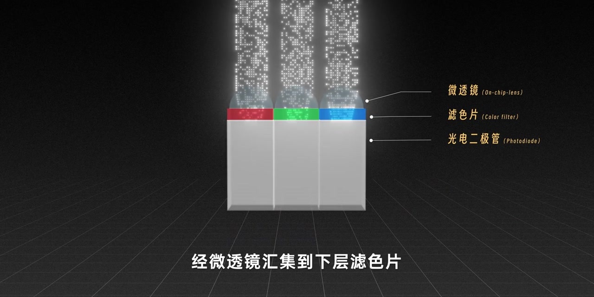
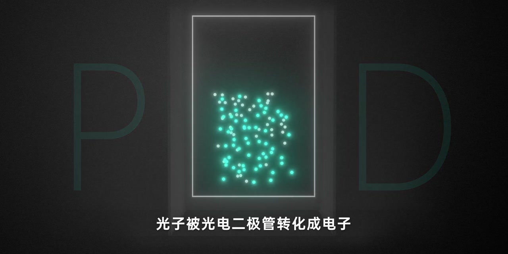
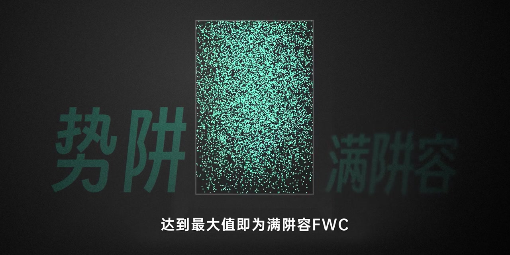
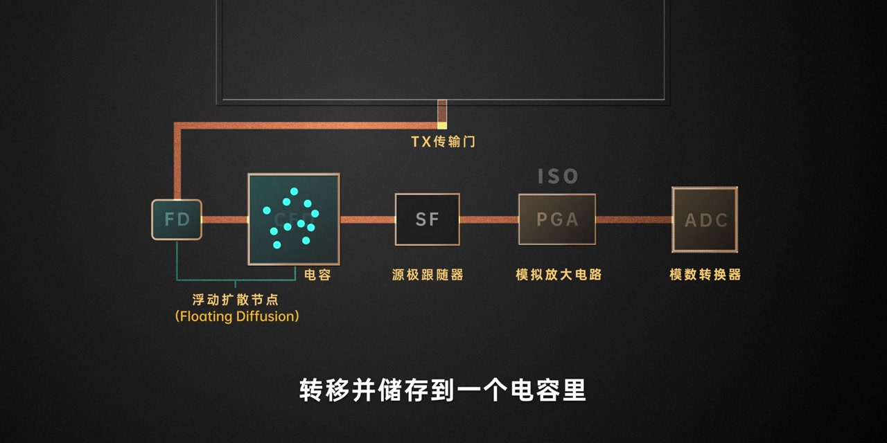
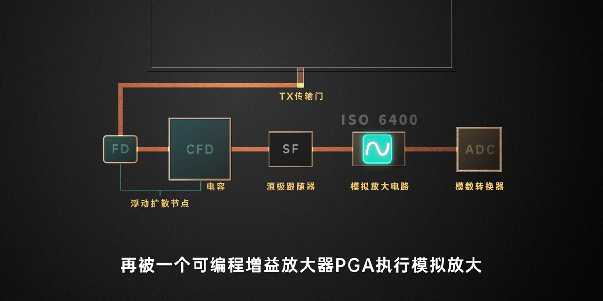
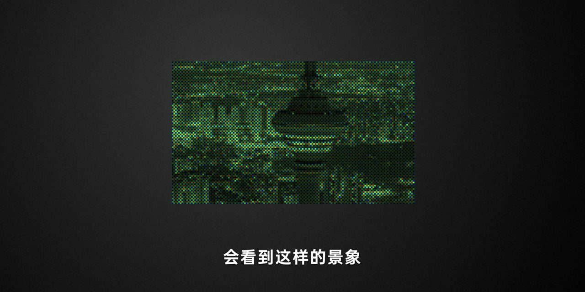
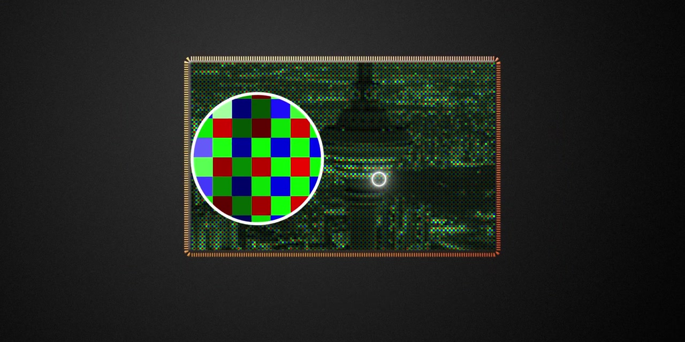

开场：以主流背照式 CMOS 为例
画面先铺开一整片彩色滤色阵列，中心高亮一颗 RGGB 单元。字幕写明：以相机中主流的背照式 CMOS为例，像素主要由几层结构构成。
画面字幕：「以相机中主流的背照式CMOS为例」
说明：Whisper 把「背照式CMOS」识成「背照是SIMS」，「几块」识成「几棵」，「微透镜」识成「仅为透镜」，「滤色片」识成「绿色片」，「光电二极管」识成「光电二级管」。下文叙述以画面字幕与动画为准；末尾仍完整保留全部 Whisper 分段。

动画切到像素剖面：光线柱落入三颗像素。从上到下依次标注微透镜（On-chip-lens）、滤色片（Color filter）、光电二极管（Photodiode）。旁白说光线经微透镜汇集到下层滤色片，滤色片筛选出波长匹配的光，再进入光电二极管 PD。
画面字幕：「经微透镜汇集到下层滤色片」

光子变成电子，并在势阱里累积
大字「PD」夹着一格装满亮点的区域：光子被光电二极管转化成电子，并在特定区域累积——这个区域叫势阱。动画随后写满阱容：势阱通常可容纳几万个电子，达到最大值即为满阱容 FWC。
画面字幕：「光子被光电二极管转化成电子」「达到最大值即为满阱容FWC」


读出链路：FD、电容、源极跟随器
画面展开一条读出路径：像素区经 TX 传输门 把电子转到 FD（浮动扩散节点），电荷存进电容并转成电压；电压再由能缓冲稳定信号的源极跟随器 SF 读出，送到后面的 PGA。
旁白大意：势阱中的电子被浮动扩散节点 FD 转移并储存到电容里，电荷转换成电压，再由源极跟随器读出。

改变 ISO，其实是在改模拟放大倍数
链路走到 PGA（可编程增益放大器）时，画面标出 ISO 6400 与「模拟放大电路」。旁白点题：改变 ISO 的数值，实际上就是改变模拟放大倍数。
旁白：「改变ISO的数值，实际上就是改变模拟放大倍数」

ADC 把电压变成数字，景物被「记」下来
最后进入模数转换器 ADC：电压信号转成数字信号。旁白强调 ADC 的分辨率和转换精度，决定最终画面还原的准确度。至此，现实景物就被相机以数字形式记录下来——故事似乎该结束了。
旁白大意：最后进入模数转换器 ADC……ADC 的分辨率和转换精度决定最终画面还原的准确度。
打开文件：先看到一帧「怪」画面
旁白忽然反转：「此时你满怀期待地打开这个文件，会看到这样的景象」——屏幕跳出一帧绿蒙、点阵感极强的夜景塔楼。为什么？因为传感器每个像素只能记录亮度信息，无法直接记录颜色，所以才在每个像素上盖彩色滤色片。
旁白大意：传感器的每个像素能记录的只有亮度信息，而无法直接记录颜色信息，所以才会在每个像素上放着一个彩色滤色片。

RGGB 拜耳排列，再靠 ISP 去马赛克
滤色片排列方式很多，最常见的是 RGGB 拜耳排列。有了滤色片，每个像素只记下对应颜色的亮度；之后图像信号处理器（ISP）提取邻域颜色信息来补全当前像素，混合出完整 RGB。这个处理过程叫去马赛克。片尾也提醒：信号还需要处理的部分还有很多。
画面字幕：「最常见的就是RGGB的拜耳排列」；旁白：「这个处理过程叫做去马赛克」
